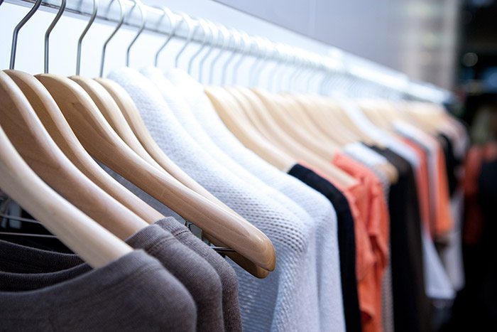

By Thành Nam
Muốn mở shop quần áo lấy hàng ở đâuchất lượng tốt mà giá cả hợp lý? Sau đây là 4 nguồn hàng quần áo giá sỉ thông dụng nhất để các bạn muốn mở shop quần áo tham khảo:
Mở shop quần áo cần chuẩn bị những gì?

Hàng nhập từ Quảng Châu
Hầu hết hàng thời trang ở các chợ đầu mối đều được các lái buôn đánh từ Quảng Châu về. Hàng nhập từ Quảng Châu rất đa dạng về chủng loại từ bình dân cho tới cao cấp, có sức tiêu thụ rất mạnh bởi không chỉ giá cả phù hợp mà kiểu dáng, mẫu mã rất đa dạng, thời trang và được cập nhật thường xuyên.
Để được giá nhập tốt nhất bạn nên đặt hàng trực tiếp từ các trang web thương mại điện tử Trung Quốc như taobao, alibaba… Thường thì bạn sẽ phải đặt cọc 70% giá trị đơn hàng và mất khoảng 7 – 10 ngày để hàng vận chuyển về đến nơi thì thanh toán nốt.
Hàng Việt Nam xuất khẩu
Chủ yếu là các sản phẩm dành cho đối tượng công sở, xuất xứ từ các nhà máy sản xuất hàng xuất khẩu, có chất lượng khá đảm bảo tuy nhiên mẫu mã rất hạn chế, không theo xu hướng của thị trường.
Bạn cần lưu ý hiện nay có một số nơi bán buôn quần áo giá rẻ gắn mác VNXK, nhưng thực ra là nhập từ các xưởng gia công chuyên sỉ hoặc là hàng Trung Quốc nhái mẫu.
Hàng thời trang thiết kế
Nguồn hàng sản xuất trong nước, có chất lượng tốt, mẫu mã tự thiết kế nên rất đa dạng hướng tới đối tượng trẻ chú trọng đến phong cách.
Còn có một dòng thời trang thiết kế giá rẻ, thực chất là đồ gia công nhái mẫu từ các xưởng công nghiệp, chất lượng và mẫu mã kém hơn nhiều so với hàng thiết kế chuẩn.
Xưởng may gia công
Các xưởng may gia công quần áo tại Việt Nam ngày càng nhiều và có quy mô khác nhau, thường nhận đặt may theo mẫu từ 10-50 chiếc. Nên chọn các xưởng nhỏ, có tay nghề cao để đảm bảo sản phẩm chất lượng tốt.
Vậy muốn mở shop quần áo lấy hàng ở đâu là tốt nhất?